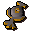

Chaos rune
| Config name | chaosrune |
| Item id | 562 |
| Value | 15 gp |
| Weight | 2g |
| Members | No |
| Tradeable | Yes |
| Stackable | Yes |
| Defined in | scripts/skill_magic/configs/runes.obj |
Chaos rune
Used for mid level missile spells.
Show 7 ground spawns on the world map → Open in knowledge graph →
Dropped by
| NPC | Level | Quantity | Rarity | Via | Notes |
|---|---|---|---|---|---|
| 14 | 35 | 1/8 (12.5%) | |||
| 29 | 35 | 1/8 (12.5%) | |||
| 49 | 35 | 1/8 (12.5%) | |||
| 79 | 35 | 1/8 (12.5%) | |||
| 120 | 35 | 1/8 (12.5%) | |||
| 159 | 35 | 1/8 (12.5%) | |||
| 9 | 2 | 1/16 (6.25%) | |||
| 57 | 3 | 1/16 (6.25%) | |||
| 64 | 4 | 1/16 (6.25%) | |||
| 57 | 3 | 1/16 (6.25%) | |||
| 172 | 10 | 7/128 (5.47%) | |||
| 86 | 5 | 7/128 (5.47%) | |||
| 51 | 3 | 7/128 (5.47%) | |||
| 141 | 10 | 7/128 (5.47%) | |||
| 141 | 10 | 7/128 (5.47%) | |||
| 14 | 2 | 2/39 (5.13%) | otherwise | ||
| 29 | 2 | 2/39 (5.13%) | otherwise | ||
| 49 | 2 | 2/39 (5.13%) | otherwise | ||
| 79 | 2 | 2/39 (5.13%) | otherwise | ||
| 120 | 2 | 2/39 (5.13%) | otherwise | ||
| 159 | 2 | 2/39 (5.13%) | otherwise | ||
| 20 | 4 | 3/64 (4.69%) | |||
| 7 | 5 | 3/64 (4.69%) | |||
| 23 | 2 | 3/64 (4.69%) | |||
| 23 | 2 | 3/64 (4.69%) | |||
| 26 | 2 | 3/64 (4.69%) | |||
| 23 | 2 | 3/64 (4.69%) | |||
| 26 | 4 | 3/64 (4.69%) | |||
| 7 | 2 | 5/128 (3.91%) | |||
| 8 | 2 | 5/128 (3.91%) | |||
| 82 | 12 | 5/128 (3.91%) | |||
| 85 | 12 | 5/128 (3.91%) | |||
| 10 | 2 | 1/32 (3.12%) | |||
| 20 | 2 | 1/32 (3.12%) | |||
| 9 | 2 | 1/32 (3.12%) | |||
| 10 | 2 | 1/32 (3.12%) | |||
| 29 | 3 | 1/32 (3.12%) | |||
| 14 | 2 | 1/32 (3.12%) | if npc_type = macro_golemguardian_6 if npc_type = macro_golemguardian_5 | ||
| 29 | 2 | 1/32 (3.12%) | if npc_type = macro_golemguardian_6 if npc_type = macro_golemguardian_5 | ||
| 49 | 2 | 1/32 (3.12%) | if npc_type = macro_golemguardian_6 if npc_type = macro_golemguardian_5 | ||
| 79 | 2 | 1/32 (3.12%) | if npc_type = macro_golemguardian_6 if npc_type = macro_golemguardian_5 | ||
| 120 | 2 | 1/32 (3.12%) | if npc_type = macro_golemguardian_6 if npc_type = macro_golemguardian_5 | ||
| 159 | 2 | 1/32 (3.12%) | if npc_type = macro_golemguardian_6 if npc_type = macro_golemguardian_5 | ||
| 14 | 50 | 1/32 (3.12%) | |||
| 29 | 50 | 1/32 (3.12%) | |||
| 49 | 50 | 1/32 (3.12%) | |||
| 79 | 50 | 1/32 (3.12%) | |||
| 120 | 50 | 1/32 (3.12%) | |||
| 159 | 50 | 1/32 (3.12%) | |||
| 92 | 15 | 3/128 (2.34%) | |||
| 22 | 5 | 3/128 (2.34%) | |||
| 45 | 5 | 3/128 (2.34%) | |||
| 42 | 7 | 3/128 (2.34%) | |||
| 48 | 10 | 3/128 (2.34%) | |||
| 33 | 6 | 3/128 (2.34%) | |||
| 33 | 6 | 3/128 (2.34%) | |||
| 36 | 2 | 3/128 (2.34%) | |||
| 34 | 3 | 3/128 (2.34%) | |||
| 34 | 3 | 3/128 (2.34%) | |||
| 34 | 3 | 3/128 (2.34%) | |||
| 22 | 6 | 3/128 (2.34%) | |||
| 25 | 3 | 1/64 (1.56%) | |||
| 21 | 3 | 1/64 (1.56%) | |||
| 28 | 3 | 1/64 (1.56%) | |||
| 42 | 3 | 1/64 (1.56%) | |||
| 28 | 3 | 1/64 (1.56%) | |||
| 28 | 3 | 1/64 (1.56%) | |||
| 33 | 3 | 1/64 (1.56%) | |||
| 2 | 2 | 1/128 (0.78%) | |||
| 2 | 2 | 1/128 (0.78%) | |||
| 2 | 2 | 1/128 (0.78%) | |||
| 2 | 2 | 1/128 (0.78%) | |||
| 2 | 2 | 1/128 (0.78%) | |||
| 2 | 2 | 1/128 (0.78%) | |||
| 7 | 2 | 1/128 (0.78%) | |||
| 16 | 2 | 1/128 (0.78%) | |||
| 21 | 1 | 1/128 (0.78%) | |||
| 22 | 1 | 1/128 (0.78%) | |||
| 28 | 3 | 1/128 (0.78%) | |||
| 24 | 4 | 1/128 (0.78%) | |||
| 28 | 2 | 1/128 (0.78%) | |||
| 15 | 2 | 1/128 (0.78%) | |||
| 8 | 2 | 1/128 (0.78%) | |||
| 14 | 2 | 1/128 (0.78%) | |||
| 2 | 2 | 1/128 (0.78%) | |||
| 9 | 2 | 1/128 (0.78%) | |||
| 20 | 1 | 1/128 (0.78%) | |||
| 5 | 1 | 1/128 (0.78%) | |||
| 5 | 1 | 1/128 (0.78%) | |||
| 28 | 3 | 1/128 (0.78%) | |||
| 38 | 3 | 1/128 (0.78%) | |||
| 5 | 2 | 1/128 (0.78%) | |||
| 5 | 2 | 1/128 (0.78%) | |||
| 6 | 2 | 1/128 (0.78%) | |||
| 5 | 2 | 1/128 (0.78%) | |||
| 4 | 2 | 1/128 (0.78%) | |||
| 4 | 2 | 1/128 (0.78%) | |||
| 4 | 2 | 1/128 (0.78%) |
Sold at
| Shop | Shopkeeper | Stock |
|---|---|---|
| Lundail's Arena-side Rune Shop. | 250 | |
| Betty's Magic Emporium. | 1000 | |
| Aubury's Rune Shop. | 1000 | |
| Magic Guild Store | 1000 |
Ground spawns
| Area | Coordinates | Level | Count | Map |
|---|---|---|---|---|
| Dark Knight Fortress | 3021, 3640 | 0 | 5 | view |
| Lava Maze | 3137, 3833 | 0 | 1 | view |
| Red Dragon Isle | 3139, 3814 | 0 | 1 | view |
| Red Dragon Isle | 3144, 3826 | 0 | 1 | view |
| Red Dragon Isle | 3145, 3814 | 0 | 1 | view |
| Red Dragon Isle | 3149, 3823 | 0 | 1 | view |
| Red Dragon Isle | 3151, 3831 | 0 | 1 | view |
Quests
Death Plateau Nature Spirit Elemental Workshop Holy Grail
Runecrafting
Chaos altar: level 35, 85 xp per essence members. Crafts  Chaos rune using
Chaos rune using

Chaos talisman.Altar at 3060, 3591 (view altar); mysterious ruins at 3060, 3585 (view ruins)
Referenced in scripts
scripts/_test/scripts/cheats/cheat_bank.rs2scripts/_test/scripts/cheats/cheat_interactions.rs2scripts/_test/scripts/cheats/cheat_magic.rs2scripts/areas/area_burthorpe/scripts/death_guard.rs2scripts/areas/area_taverly/scripts/crystal_chest.rs2scripts/areas/area_wilderness/scripts/lava_maze.rs2scripts/drop tables/scripts/bandit.rs2scripts/drop tables/scripts/bandit_camp_leaders.rs2scripts/drop tables/scripts/barbarian.rs2scripts/drop tables/scripts/black_demon.rs2scripts/drop tables/scripts/black_knight.rs2scripts/drop tables/scripts/chaos_dwarf.rs2scripts/drop tables/scripts/dark_warrior.rs2scripts/drop tables/scripts/dark_wizard.rs2scripts/drop tables/scripts/druid.rs2scripts/drop tables/scripts/dwarf.rs2scripts/drop tables/scripts/earth_warrior.rs2scripts/drop tables/scripts/farmer.rs2scripts/drop tables/scripts/fire_giant.rs2scripts/drop tables/scripts/giant.rs2scripts/drop tables/scripts/goblin.rs2scripts/drop tables/scripts/greater_demon.rs2scripts/drop tables/scripts/guard.rs2scripts/drop tables/scripts/hobgoblin.rs2scripts/drop tables/scripts/ice_warrior.rs2scripts/drop tables/scripts/kalphite_guardian.rs2scripts/drop tables/scripts/kalphite_soldier.rs2scripts/drop tables/scripts/kalphite_worker.rs2scripts/drop tables/scripts/lesser_demon.rs2scripts/drop tables/scripts/man.rs2scripts/drop tables/scripts/moss_giant.rs2scripts/drop tables/scripts/necromancer.rs2scripts/drop tables/scripts/otherworldly_being.rs2scripts/drop tables/scripts/pirate.rs2scripts/drop tables/scripts/rogue.rs2scripts/drop tables/scripts/skeleton.rs2scripts/drop tables/scripts/thug.rs2scripts/drop tables/scripts/white_knight.rs2scripts/drop tables/scripts/wizard.rs2scripts/drop tables/scripts/yanille_soldier_tower_guard.rs2+14 more files